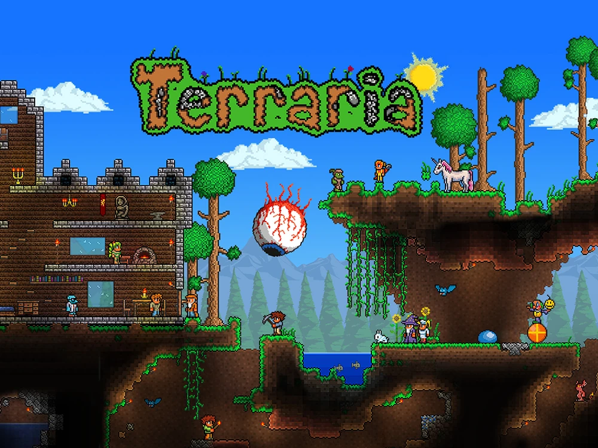

ชื่อเกม Terraria
เป็นเกมแนว 2D Sandbox ที่ให้เราผจญภัยไปในโลกของ Terraria อยากสร้าง อยากทำอะไร ก็สามารถทำได้ตามใจคุณ
Terraria เป็นเกมแรกที่ผมซื้อมาเล่น เป็นเกมที่สนุกมากๆ โลกของ Terraria
มีพื้นที่หลากหลาย ทำให้เวลาออกไปผจญภัยก็ได้เจอกับพื้นที่ใหม่ มอนสเตอร์ใหม่ ไอเทมใหม่และบอสใหม่ๆ
ทุกๆครั้งที่เล่นจบแล้วกลับมาเล่นใหม่ เกมก็ยังคงสนุกเหมือนเดิม และถ้าหากว่าเบื่อก็สามารถโหลดม็อดได้ทาง tModLoader
ระบบปฏิบัติการที่รองรับ Windows, macOS, Linux, Android และ iOS